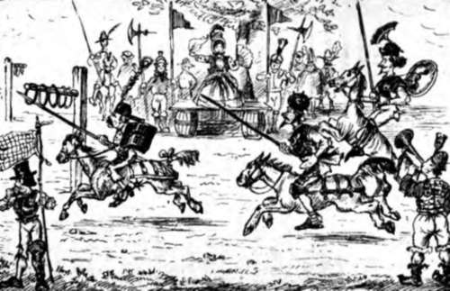

Casually Explaining The Unique Latin Motto Of An Ancient House. Continued
Description
This section is from the book "Smoked Glass", by Orpheus C. Kerr. Also available from Amazon: Smoked Glass.
Casually Explaining The Unique Latin Motto Of An Ancient House. Continued
The top seat all around, singularly narrow as it was, seemed to have the preference; and, as its occupants were privileged to hook their insteps and ankles on the next seat below, and the two seats still lower were chiefly practicable for the use of chickens, I did not wonder at the choice.
Captain Villiam Brown and I now took out the bits of Smoked Glass with which we always protect our eyes when viewing dazzling spectacles, and surveyed the knights and ladies as they arrived and climbed to the top seat.
"Ah!" says Villiam, "if that rail should happen to turn, my fren', how many would experience reverses!"
We were both of us cogitating over this idea, when Captain Munchausen motioned for us to take seats on the barrels next to his, and says he, -
" Hist, Hessians! see you not, by 'r lady, that the contending knights have arrived ? "
Sure enough, my boy, two or three of the seats had been let down upon the other side of the glittering arena, and there entered four stately figures upon steeds branded with the motto, " U. S." Forward they came across the field, to pay their devoirs to the Queen of Love and Beauty in a bonnet of the latest fashion of the Spring of '61 ; while a party of New York heralds erected, at proper points in the lists, posts from whose cross-bars hung many curtain rings.
First of the champions was Sir Cooke de Puddingwell, in a casque of soft black felt, through the top of which some locks of his hair protruded in an ingenious plume. His colors were crimson, and he wore them in the shape of a red flannel under-garment which flowed upon his breast between the flaps of his rather-tight-at-the-waist alpaca mantle.
Next was the Viscount Morgeejee, descended from a noble Welsh family of cavaliers, in a chapeau de straw, shaped somewhat like an umbrella, and a dress-coat of rich cotton velvet, gored and made low in the neck. His colors were blue merino, and he wore them in quatriform patches on each knee.
Thirdly was Sir Blessingen Desguys, of French cavalier stock, in a helmet of black silk with very little of the nap rubbed off, and a mantle of brown linen trimmed with tulle and hem-stitched up the front with narrow edging on the sleeves, and gored down the back, with a frill of applique at the waist. His colors were a yellow silk handkerchief, one end of which protruded behind his ear from under his helmet.
Field of the Cloth of Gold after it had suspended specie payment.
The last was Sir Bender Awdye, in a white plush helm, which he was reported to wear in bed, a rich jacket of green baize with round bone blazonries, and the quarterings of his coat-of-arms engrossed upon his costume just below the brief tails of his jacket. He appeared to have no colors, being only a banneret; but something white occasionally appearing at the foot of his spine as he moved in the saddle suggested the possibility of a hidden scarf of spotless satin, the secret gift of some ladye fayre. It might have been his pocket-handkerchief though.
Each knight was armed with a lance with the broom part broken off, which he waved in salute to the Queen of Love and Beauty.
" By my halidome!" quoth Sir Cooke de Puddingwell, picking a leg of cold chicken, and stirring up his fiery barb so that a little touch of spring-halt might not be too visible, "an' I take not six rings to-day, call me churl".
"Gramercy for thy liberality, gentle sir," retorted the Viscount Morgeejee, who had just bought some peanuts.
" By the rood! an' ye shall prove the boast to the death, an' our lady wills it," quoth Sir Blessingen, brushing a fly from the place where his courser had been galled by the collar when ploughing. At this moment the New York heralds appeared in the centre of the field, and proceeded 19* to publish the Personals of the Coming contest. - One of them lifted up his voice, and said, -
"Here ye all! If the four gentlemen who rode up to Chipmunk this morning wish to continue their acquaintance with the four ladies who love them; let them at once address themselves to obtaining rings".
Then all the heralds joined in the chorus of "Largesse, noble knights, largesse;" and then retired to play seven-up behind a nobleman's carriage with "U. S. Ambulance" inscribed upon its panel.
Passing one half of his apple to the nearest lady, and putting the other half into his pocket, Captain Munchausen took a standing position upon his barrel, and says he, -
"Let the Tournamong proceed!"
Away hobbled all the knights at the word, in a series of uneven hops best adapted to the infirmities of the mettled Arabians they bestrode; making directly for the first post of rings and aiming with their lances to cary off one ring at least.
Sir Cooke de Puddingwell almost had one, when his blooded mare took fright at a "chignon" in the range of his vision, and staggered horror-stricken against Sir Render's Hambletonian, with such a shock to that knight, as caused his helmet to fall off and reveal a lunch of two roast apples on his head. Seeing their advantage, the Viscount Mor-geejee and Sir Blessingen made a gallant push for the other post, amid the plaudits of the nobility and gentry; but Sir Cooke and Sir Render, recovering, were there, too, as quickly, and the wriggling of all their horses was as one sound.
" By the Mass! Sir Viscount," said Sir Blessingen, hotly, " an' thou keep not thy lance from the small of my back, I will make thee cry Gramerey!"
"Ay, by my halidome! " quoth Sir Cooke de Pudding-well, "an' thou keep not thy steed, Sir Blessingen, from trying to sit in my lap, I will serve thee an' thou wert a varlet!"
Here Captain Munchausen, who had just drawn a pair of clean white socks over his hands to be more genteel, once more arose upon his barrel, and says he, -
"The first round of the Tournamong is over. Five minutes for refreshments, by 'r lady ! "
I turned to Villiam, whose inferior Sixth Ward nature had become dumfounded at the courtly display, and said I, -
"Well, my Iron Duke, how standest thou the feverish excitement of the scene ? "
" Hum ! " says Villiam, musingly, "methinks I see the Arabian Nights of my childhood. Methinks," says Villiam, historically, "that mine eyes behold the Field of the Cloth of Gold, -after it has suspended speshie payment".
I was about to rejoin, when the ringing of a dinner-bell by an extra herald brought the knights in line again, and the tournamong raged with renewed force. Owing to the fact that the steed of Sir Cooke, while lunching upon the tempting tail of Sir Blessingen's steed bit unexpectedly upon the raw, the latter nobleman suddenly went to the front, with a plunge like a huge grasshopper, and, striking full against the first ring post, brought it crashing to the ground.
" A foul blow, by my halidome ! " shouted Sir Cooke, impatiently striving to break his charger of the habit of walking on three legs, which it had acquired in the grocery business.
" By the Mass! an' thou sayest so thou liest, base churl! " roared the agitated Sir Blessingen, doubly frantic at having jammed his fingers and found his pockets picked of four gingernuts.
In a moment all was in confusion; and to add to the dreadful splendors of the scene, Sir Render Awdye, in bending eagerly down from his saddle to look for rings, made such a display of a pair of suspenders as caused several ladies to faint on the spot.
In short, the tournamong was over; and, after amicably uniting forces to chastise three members of the freed-negro race who had been heard to laugh, the knights and spectators went their ways, and we returned thoughtfully to the chateau.
Can it be, my boy, that a people who thus retain all the usages and hardihood of knighthood, really lack any radical essential to suit the pleasure of the Chase ?
Yours, inquisitively,
Orpheus C. Kerr.
Continue to:
- prev: Letter XVIII. Casually Explaining The Unique Latin Motto Of An Ancient House
- Table of Contents
- next: Letter XIX. Paying A Handsome Tribute To Woman